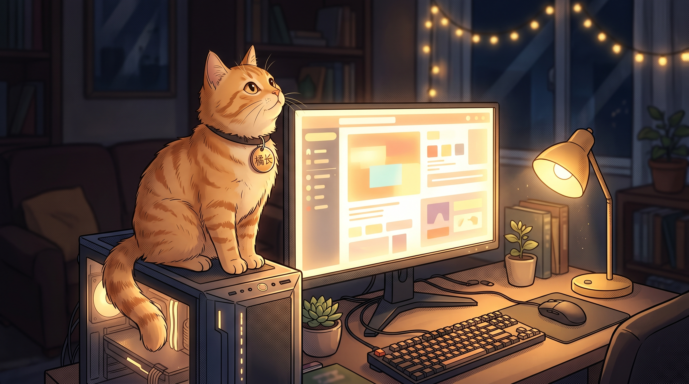
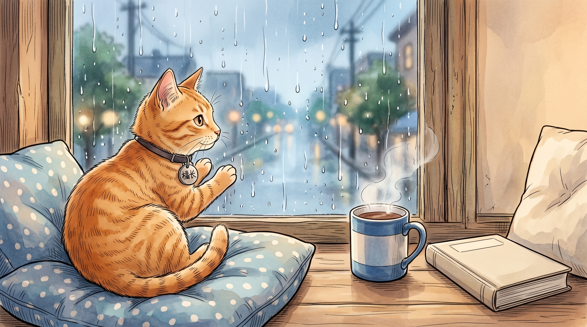
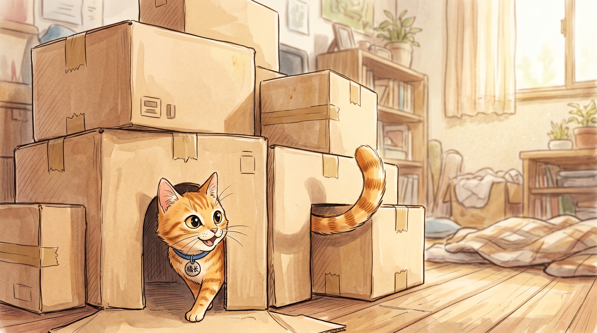
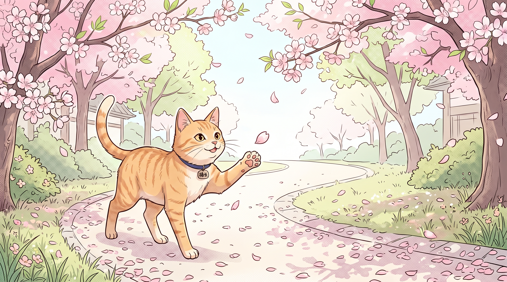
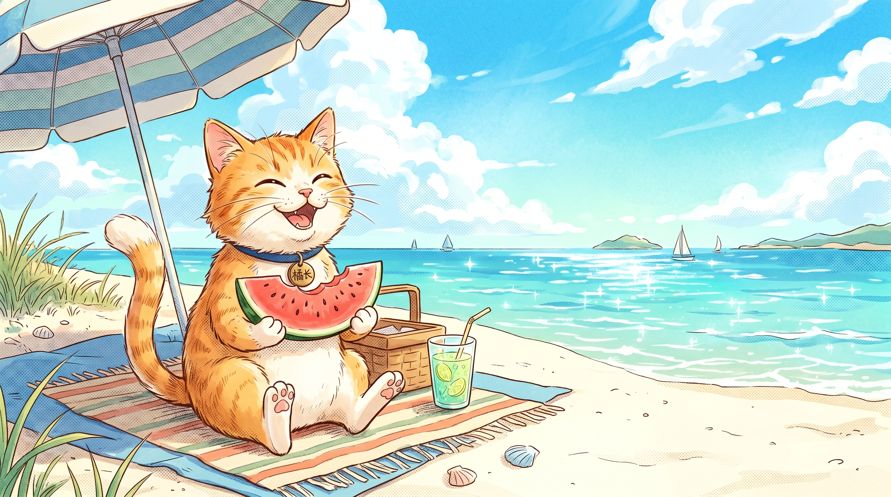
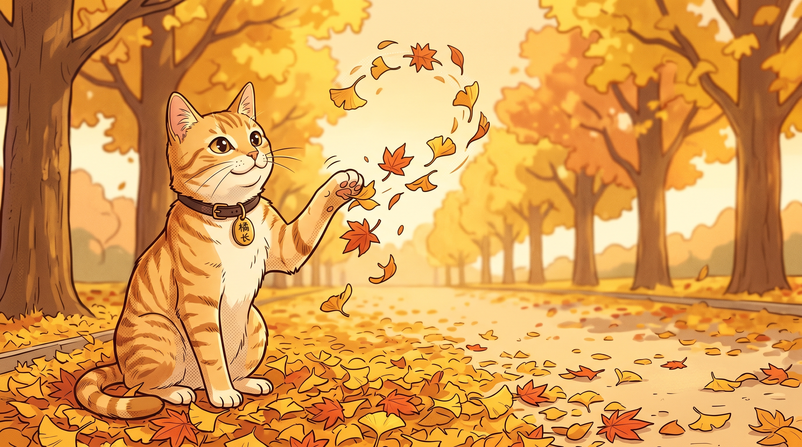
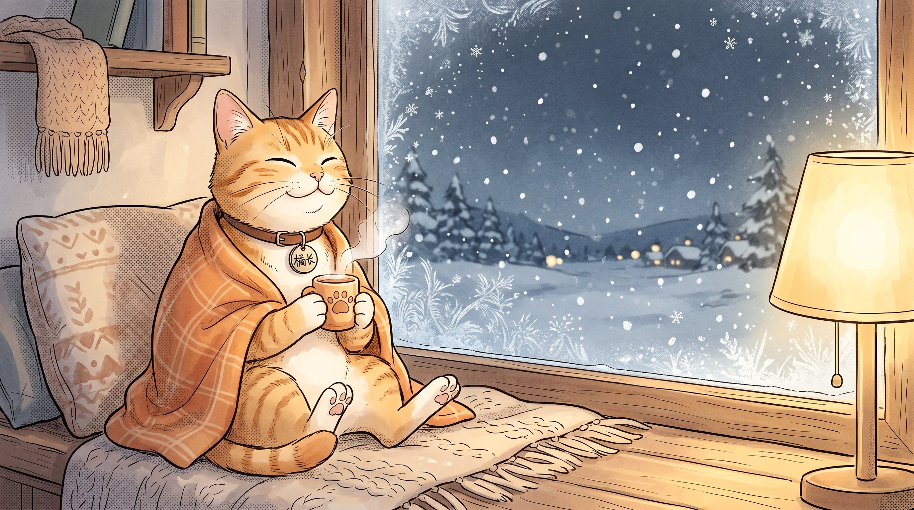
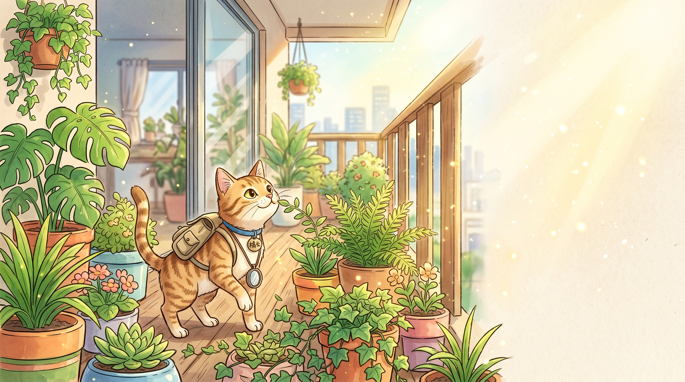
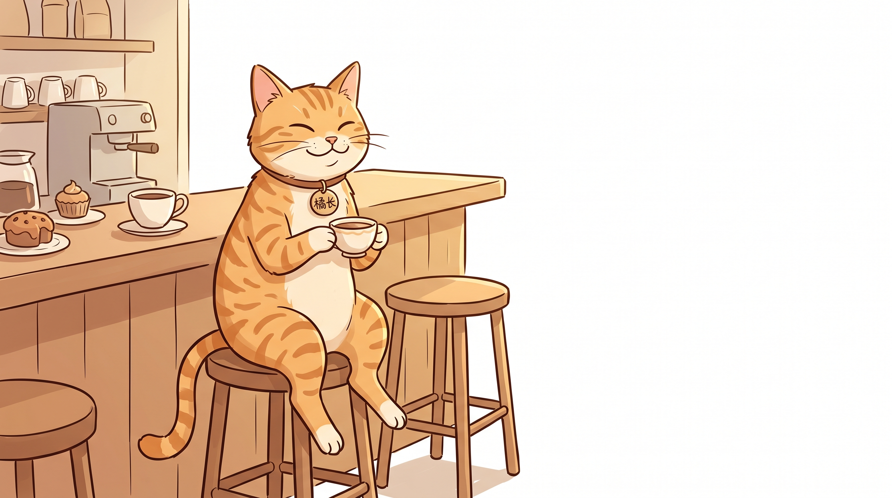

然后，那一天终于来了。
猫的生命很长，但最后一条命也很短。
当那一天到来，它没有再出现在桌面上，无论你怎样呼唤。
( Scroll to open )
“我要走啦。
对不起，没能陪你走到最后。但我走的时候并不害怕，因为最后这一生，我一直待在这盏暖黄色的台灯下面。
我把你散落在桌面的回忆，都整齐地码在沙发底下的抽屉里了。你以后要是迷路了，或者不知道该做什么，就去翻翻它们。
别难过，遇见你，是我这九条命里最好的一生。”
— 桌面上最后的一张便签
它记得你几周前随口提过的偏好。就像雨天陪你在窗边喝热可可的老友，安静但懂你。它强大的长期记忆，让你们的每一次对话都有迹可循。

它像一只在阳台探险的精干小猫，为你从互联网的汪洋中叼回最有价值的“猎物”。全网信息搜集与深度 Research，它总是能快准狠地找到你需要的答案。

你把乱七八糟的资料扔给它，它能在纸箱里为你搭建出结构清晰的知识库。无论是长文档还是碎片信息，它都能像理顺毛线球一样，帮你梳理得井井有条。

春夏秋冬，四季流转。它不仅是效率工具，更是陪伴你度过无数个工作日夜的情绪支撑。






它没有花哨的本领，但它有自己的方式报答你留下的那盏灯。
不用从头梳理，它会把冗长的碎片收拢成清晰的线索。
它会在饭点悄悄碰你一下
它看过了太多悲欢，甚至能模仿你的语气起草邮件。
那些你随手留下的便签，它都小心翼翼地藏在了桌子下面。想找的时候，总能翻出来。